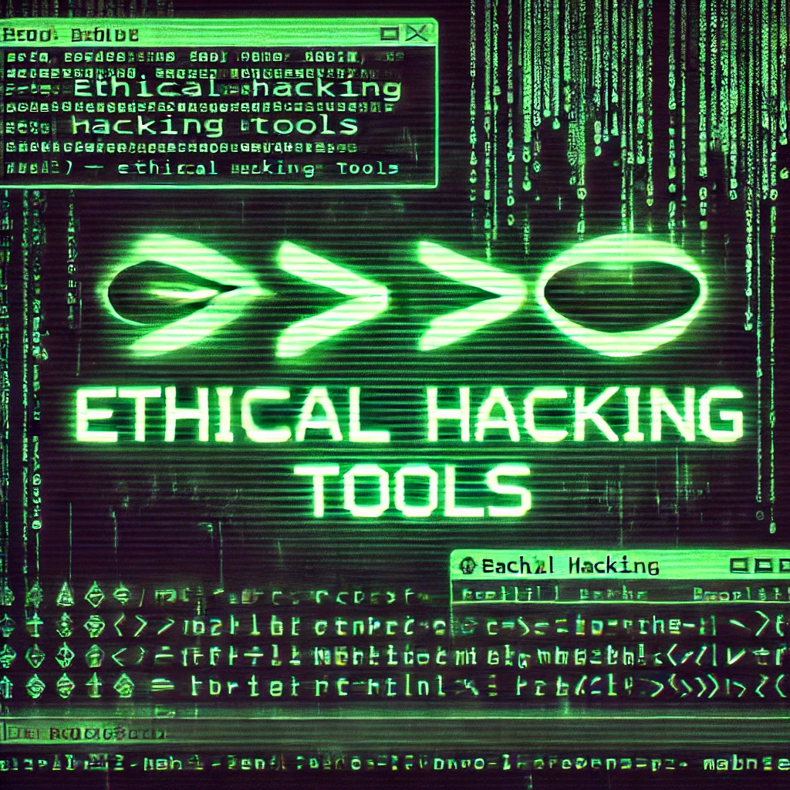

If you just want to take a look over my repository or contact me click here:
 https://github.com/pmartinezrhub
https://github.com/pmartinezrhub Linkedin
Linkedin
📧 pmartinezr@proton.me
What you will find here?
On this list is mayority free, wellknow aplications and tools for ethical hacking and pentest, with generic propouses. Of course all was tested by myself.
What you will not find here?
Especific tools for especific sotfware, hardware or Operating System like WPScan or Mimikatz.
-
General Security Info
Exploitdb https://gitlab.com/exploit-database/exploitdb archive of public exploits Hacking articles https://github.com/Ignitetechnologies Lots of hacking articles
OWASP https://owasp.org/ -
General propouse tools
Netcat https://netcat.sourceforge.net/ called the swiss army knife
Socat http://www.dest-unreach.org/socat/ Netcat on steroids
Curl http://curl.haxx.se/ cURL is a command-line tool used for transferring data to and from servers using various protocols like HTTP, HTTPS, FTP, and more. -
Network scanners
Netdiscover https://github.com/netdiscover-scanner/netdiscovernetwork address discovering tool
Nmap https://nmap.org/ network port scanner
Zmap https://zmap.io/ ZMap is a fast single-packet network scanner
Nmap-scripts https://github.com/cldrn/nmap-nse-scripts Collection of nmap scripts -
Vulnerability scanners
Nuclei https://github.com/projectdiscovery/nuclei
Openvas http://www.openvas.org/ A discover vulns application
Nessus http://www.tenable.com/products/nessus-vulnerability-scanner Another vulns discover -
Web browsers & addons
Firefox https://www.mozilla.org Browser
Wappalyzer https://www.wappalyzer.com/ This extensión identifies technologies on a web
FoxyProxy https://getfoxyproBEST Proxy switcher for browsers. -
Web pentest frameworks
Whatweb https://www.whatweb.net Netx generation web scanner
Burpsuite https://portswigger.net/burp (Free version limited)
Zap Attack Proxy https://www.zaproxy.org/
W3af http://w3af.sourceforge.net/
Nitkto http://www.cirt.net/nikto2 -
Fuzzers
Wfuzz http://www.edge-security.com/wfuzz.php
Gobuster https://github.com/OJ/gobuster -
Bruteforce
THCHydra https://www.thc.org/thc-hydra/ -
SQL Injection
SQLi Payloads https://github.com/payloadbox/sql-injection-payload-list
Sqlmap https://github.com/sqlmapproject/sqlmap/wiki Automatic SQLi -
XSS Cross Site Scripting
XSStrike https://github.com/s0md3v/XSStrikeXSStrike is a Cross Site Scripting detection suite
Portswigger cheat-sheet for XSShttps://portswigger.net/web-security/cross-site-scripting/cheat-sheet -
Exploiting Frameworks
BeEF https://beefproject.com/ BeEF is short for The Browser Exploitation Framework. It is a penetration testing tool that focuses on the web browser.
Metasploit https://www.metasploit.com/
Armitage www.fastandeasyhacking.com
NetExec https://github.com/Pennyw0rth/NetExec Network service exploitation tool
Evil-Winrm https://github.com/Hackplayers/evil-winrm The ultimate WinRM shell for hacking/pentesting
-
Web Shells
r57shell https://github.com/r57shell
c99shell https://c99shell.net/
Weevely3 https://github.com/epinna/weevely3 -
DDoS
Ufonet https://github.com/epsylon/ufonet DDoS over TOR
Hping http://www.hping.org/ Stress -
OSINT
Shodan https://www.shodan.io/
Google https://google.com -
Social Engineer
Social Engineer toolkit https://github.com/trustedsec/social-engineer-toolkit -
Networks
Macchanger https://github.com/alobbs/macchanger
Openvpn https://openvpn.net/ OpenVPN
Tor https://torproject.org/ The Onion Router
I2p https://geti2p.net/en/ I2P Network
Onioncat https://www.onioncat.org/ VPN over TOR -
Wifi
PixieWPS https://github.com/wiire-a/pixiewps WPS PIN exploiting Reaver https://github.com/tiagob0b/Reaver-WPS WPS wireless bruteforce Wifiphisher https://github.com/wifiphisher/wifiphisher Phising , Evil Twin, portal captive. Fluxion https://github.com/FluxionNetwork/fluxion retrieve the WPA/WPA2 key from a target access point by means of a social engineering (phishing) attack
Aircrack https://www.aircrack-ng.org/ -
Router
RouterSploit https://github.com/threat9/routersploit -
Packet inspectors
TCPDump https://www.tcpdump.org/
Wireshark https://www.wireshark.org/ -
IDS
Suricata https://suricata.io/
Snort https://www.snort.org -
Firewall
OpenSense https://opnsense.org
IPFire https://www.ipfire.org/ -
Encoding and ciphers:
decode.fr https://www.dcode.fr/en Web with decrypters for all kind of ciphers, included root13, caesar, etc -
SQL Injection
Sql payloads https://github.com/payloadbox/sql-injection-payload-list
Sqlmap https://github.com/sqlmapproject/sqlmap/wiki -
Reverse Engineering
IDA Free https://hex-rays.com/ida-free
Radare2 https://www.radare.org/r/index.html -
Password Cracking
Hashcat https://hashcat.net/wiki/ Cracking passwords tool
Crunch https://github.com/crunchsec/crunch Dictionary generator -
Forensic
Caine Linux https://www.caine-live.net/ -
Pentest
BlackArch https://www.blackarch.org/
Kali Linux https://www.kali.org/
BackBox https://www.backbox.org/ -
Security in general
Parrot OS https://www.parrotsec.org/
Qbes OS https://www.qubes-os.org/ - Vulnerable machines
DVWA https://github.com/digininja/DVWA
Metasploitable https://information.rapid7.com/download-metasploitable-2017.html - CTFs
PicoCTF https://picoctf.org/
Ctf.hacker101 https://ctf.hacker101.com/
Dedicated cibersecurity Linux distros
Training
You can find some of this resources on this site https://legitmagnets.eu